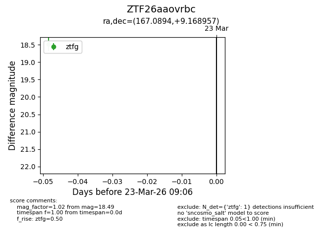
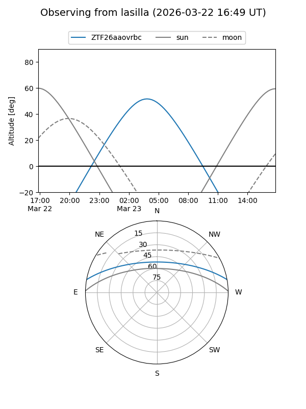
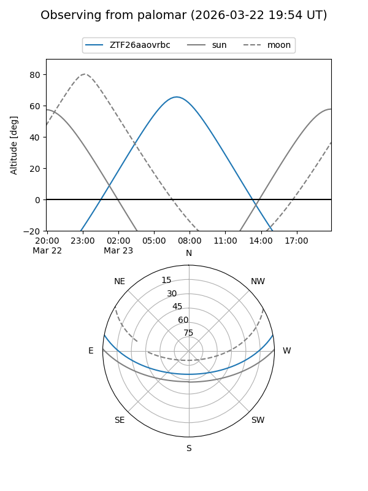

ZTF26aaovrbc
Target ZTF26aaovrbc at 2026-03-23 09:08
Aliases and brokers:
FINK: link
Lasair: link
ALeRCE: link
alt names
ZTF26aaovrbc (ztf,fink_ztf)
Coordinates:
equatorial (ra, dec) = 167.0894,+9.16896
equatorial (HMS+DMS) = 11:08:21.45,+09:10:08.24
galactic (l, b) = (244.4856,+59.75663)
Flags:
Photometry:
last ztfg=18.49
1 ztfg detections
Lightcurve

Visibility


Additional plots